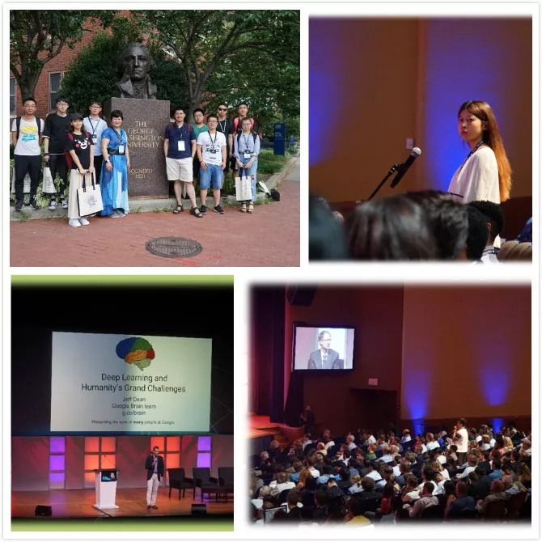
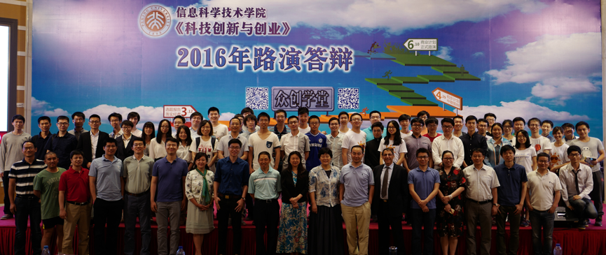

useful links
Dlib组主页姐妹课《职业规划与领导力发展》链接
课程编号
本科生、研究生课号：04833010
course time
2018.3.1–6.14每周周四晚上10~11节
(6：40-8：30pm)
classroom
北大理教302
微信号
pkuxstart

contact
助教：
王一帆
yifanwang [at] pku.edu.cn
王炜程
wangweicheng [at] pku.edu.cn
科技创新与创业
Technology innovation and Entrepreneurship
课程定位
课程旨在培养学生的创新思维，让学生了解产业分析、需求把握、产品设计、商业计划等基本创业流程，掌握团队建设、领导力培养等创业技能。课程以学生听讲座为主，邀请多位创业成功的杰出人生授课，穿插大量的课堂讨论，并辅以物联网、企业大数据、人工智能、高科技产业等实际案例分析。实践环节以团队项目（可以是已有项目）驱动，学生须亲自参与项目调研及开发工作（有分工合作，不一定要编程），体验科技创业的激情与艰辛。本课还根据学生自己提出来的创新项目的特点，安排授课嘉宾或相关行业的领军人物在课下对各创业团队进行互动和指导。通过本课程的学习，有助于提升学生的科学素养，并培养学生的科技敏感和商业嗅觉。
本课程不限制选课专业年级，欢迎全校学生踊跃报名。
2018年春季“科技创新与创业”课程安排如下：
| 时间 | 嘉宾 | 主题 |
|---|---|---|
| 3.1 | 主持人雷鸣、张铭、许辰人 | |
| 3.8 | 麦肯锡健康创始人、CEO樊琴 | |
| 3.15 | 北极光创始人邓锋 | |
| 3.22 | 艾瑞集团CEO杨伟庆 | |
| 3.29 | OFO创始人戴威 |
共享出行革命 |
| 4.5 | 清明节放假 | |
| 4.12 | 新浪微博CEO王高飞 |
微博的发展分析, (总结稿) |
| 4.19 | 秒针系统、明略数据创始人吴明辉 | |
| 4.26 | 东方弘道资本合伙人李晓光 | |
| 5.3 | 校庆放假 | |
| 5.10 | 齐玉杰 | |
| 5.17 | 百度首席产品官孙云丰 | |
| 5.24 | 美丽说创始人、CEO徐易容 | |
| 5.31 | 北京上智力行管理顾问公司创始人董小玲 |
给创业者的礼仪、社交与婚恋指导 |
| 6.7 | 以色列创业导师Yossi Dashti | |
| 6.14 | 张铭、许辰人 |
商业计划书路演答辩(二教地下阶梯教室) |
考核方式
（1）课堂上表达与分享的参与程度、课程反馈 20%
（2）跟创业导师的面谈、小组活动、小组讨论 20%
（3）小组项目答辩和展示（主要商业计划书） 30%
（4）课程学习心得报告 30%
嘉宾列表

优秀项目展示
|
获教育部创新实践项目奖 |
获教育部创业训练项目奖 |
|
获教育部创业训练项目奖 |
往期剪影
|  |
|
华盛顿全球挑战赛 |

|
|
斯坦福Health Hackson，CatherineJan、师浩然以及朱芄蓉同学设计的CatSpotter成功进入决赛，并夺得了PHIND Innovation Grand Prize和Intel Nervana AI Cluster Runner-Ups两项大奖 |

|
|
同学们积极参与课程和路演答辩 |

|
|
2017学期路演答辩 |
|  |
|
2016学期路演答辩 |